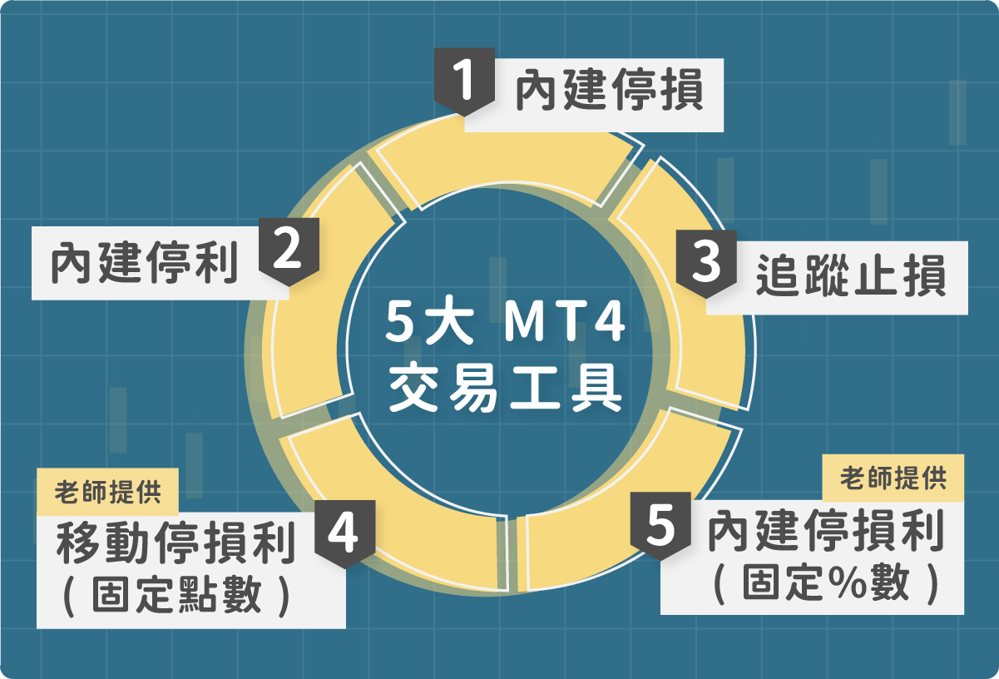
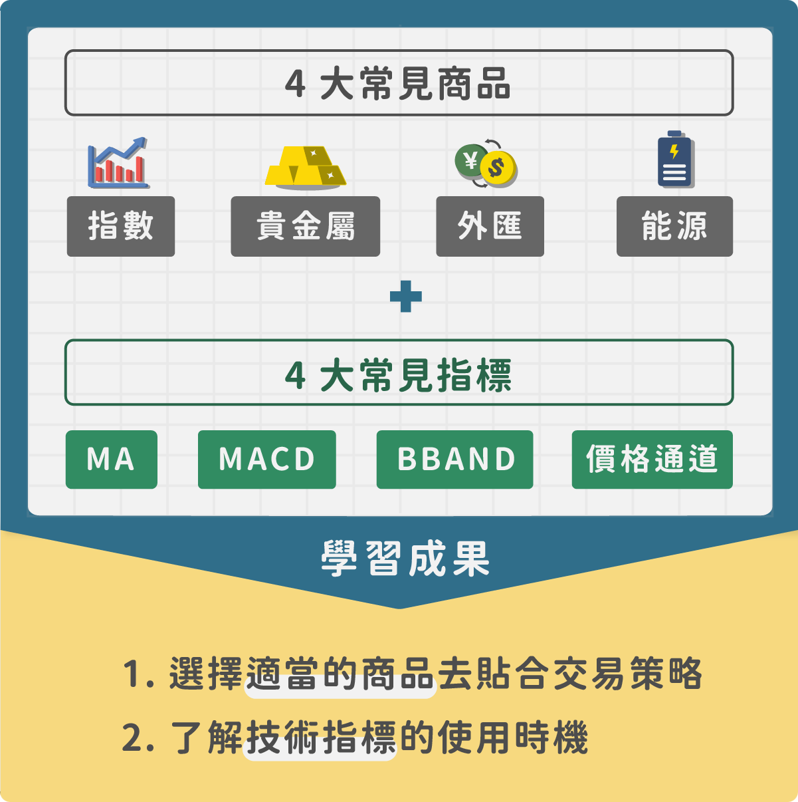
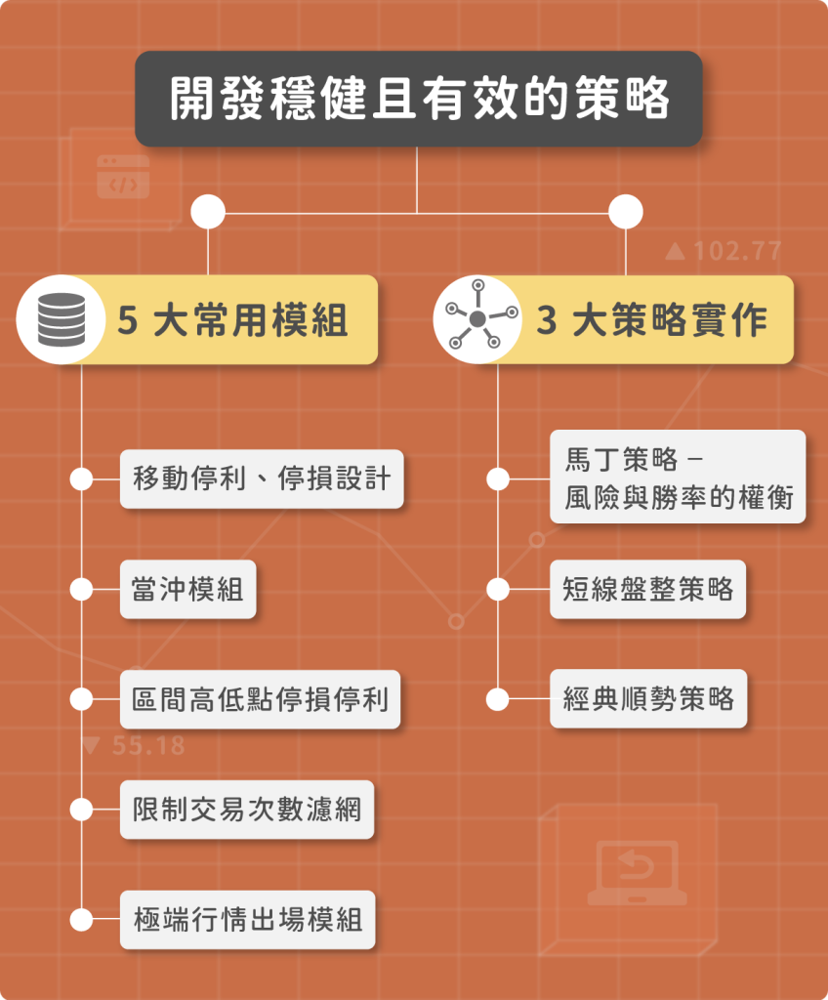

粉絲團
粉絲團 追隨我們
追隨我們
什麼是 MT4 ? 用它進行投資操作有甚麼優勢 ?
隨著網路的普及，外匯已經逐漸發展成世界上最大的交易市場，出現了許多外匯金融工具，MT4 就是其中之一。MT4 大多用於接收「外匯行情」、「CFD商品」，還支援多種外匯、指數、貴金屬乃至於股票的 CFD 商品，是目前全球範圍內使用最為廣泛的交易工具。而它有著以下幾點優勢： 擁有手機 APP 版本：讓交易者即使不在電腦前，也可以隨時隨地進行下單操作或是市場分析。 多元的指令來配合不同的外匯交易需求：透過建立市價單或掛限價單，以及設定止損和止盈價位，交易者可以實現不同的交易策略。 3. 交易操作界面簡單易懂：界面結構簡潔，邏輯清晰。商品報價、分析圖表、各項交易詳情，均一目了然。 安全性高：MT4 是一個安全性非常高的交易平台，平台以及伺服器傳輸所有資料都採用 128 位元密鑰加密形式，交易資訊受到了很好的保障，不必擔心交易帳戶安全和資訊洩漏的可能。 財經新聞和警示工具幫助決策：MT4 的財經新聞和警示工具允許外匯交易者洞悉最新的全球金融外匯市場新聞，幫助交易者第一時間做出正確的交易決策。 擁有智能交易系統 ( EA )：外匯自動化交易 ( EA ) 是 MT4 軟件平台最強大的功能之一，交易者可以根據自身外匯交易策略編寫和套用智能交易系統。 有些人可能有疑問，不是已經有出 MT5 了，為什麼還要使用 MT4 呢 ? MT4 與 MT5 是定位不同的交易平台，MT5 基於 MT4 平台的基礎做出部分功能改進，也擴大了可支援的市場範圍，但也變得相對複雜。與 MT5 相比，MT4具有簡潔易操作、穩定性高能等優勢，相較於 MT5，MT4 難度較低，更適合一般交易者操作外匯保證金、CFD 的交易。 揭秘交易騙局 ! 識別真假 MT4 平台 # MT4 交易詐騙的新聞頻傳，讓你不能放心使用嗎 ? 教你破解黑平台詐騙的技巧 ! 許多人對使用 MT4 平台有興趣，但是新聞報導 MT4 交易詐騙事件頻傳，擔心自己也受騙而不敢使用嗎 ? 別擔心，課程中將教你如何挑選經紀商、牌照、註冊國家等挑選技巧，以及如何區別真假平台，讓你能夠安心的利用 MT4 平台，完成各國商品的交易。 不會寫程式也沒關係，內建小工具讓你無痛輕鬆交易 許多初學者可能沒有程式背景，且害怕用程式進行交易。那這章節剛好符合你的需求，除了基本的內建停損、停利、追蹤止損外，還有教你適合短線的固定點數的移動停利，可以讓獲利維持在固定的金額內而不會距離自己的預期太遠；適合中長線交易固定百分比的移動停利，更能夠抓住該抓住的波段，可以讓獲利維持在一定比例內。
4 大常見外匯交易商品 + 4 大常見指標，有效評估市場走勢
課程中會介紹「指數、貴金屬、外匯、能源」等常見商品，並教你如何選擇有效的商品去貼合策略。掌握商品與金融概念後，緊接著學習如何在 MT4 上插入技術指標，包括「MA、MACD、BBAND、價格通道」等常見指標，並在適當的時機使用，作為投資時額外的參考資訊，讓你的投資分析更有依據！
編寫 EA（智能交易系統），利用 MT4 進行全自動交易 !
說到自動交易就不得不提到 MT4 的強大功能 EA ( 智能交易系統 )，是由程式根據預先編輯好的交易策略來執行交易訂單 ，以此達成用電腦來模擬交易員的下單操作。對於投資者來說，不可能 24 小時隨時關注市場動態，這時 MT4 「自動交易」的優勢就體現出來了！CFD 交易者可以使用 EA（智能交易系統），自行編寫套用 CFD 交易策略，如此不用全天觀察行情變化，也不會錯過任何交易機會。

獨家！5 大常用模組 + 3 大策略，自由組合交易策略
課程中除了提供 5 大常用模組，讓你能快速使用模組開發策略外，將詳細解說 3 大策略實作的發想、架構，並且提供策略程式碼，學完也可以直接使用。配合前面所學稍加組合，便能寫出自己想要的交易策略並執行。
學會回測驗證，有效檢視交易績效
教你如何在MT4上執行回測，看懂回測報表，從中獲取有用的資訊 回測是在探索新市場和策略時可以使用到的方法，根據歷史資料提供有價值的反饋，告訴你測試的策略是否有效。通過回測能夠讓交易者減輕承擔資金風險，然而多數人執行交易策略後，不知道驗證績效，或是對於回測流程不熟悉，市面上相關的教學又少，讓人不知從何下手。課程中將教你如何在 MT4 執行回測、看回測報表的重點、獲利與虧損曲線、以及如何分析策略等。

參數最佳化，選擇表現好的參數來優化交易策略
參數最佳化可以幫助我們尋找歷史行情中表現較好的參數，並用這些參數跟邏輯進行驗證與交易，然而最佳化過頭會導致策略很難適應未知的行情走勢。課程除了教你挑選適合的參數設置、運行策略最佳化外，還教你該如何避免過度最佳化。讓你能善用最佳化優化交易策略。